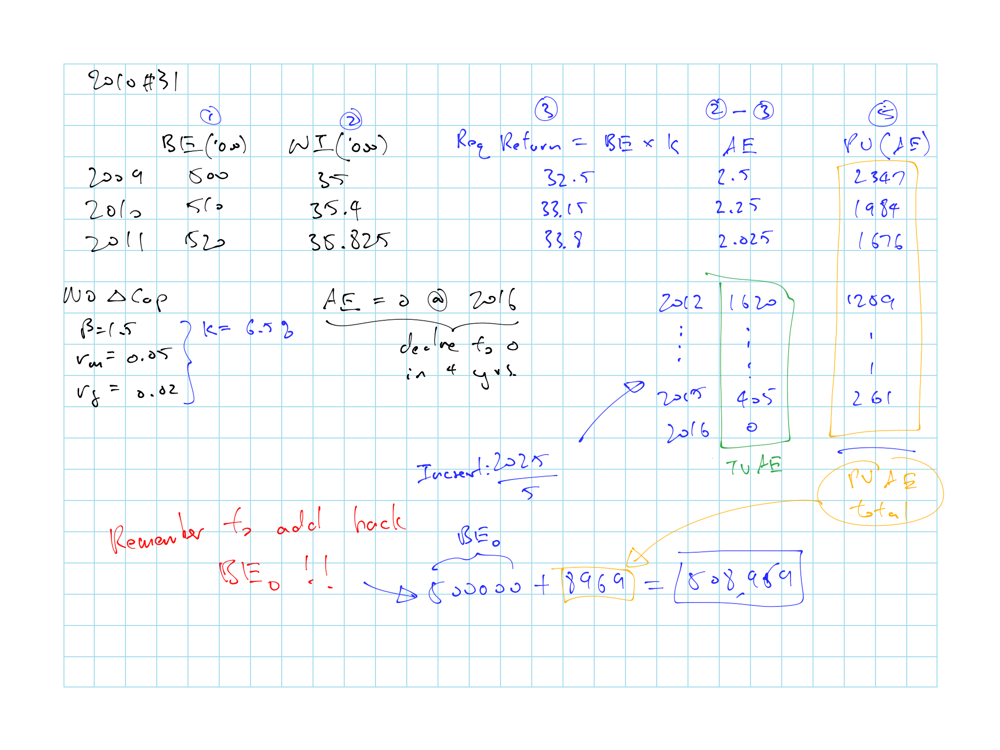
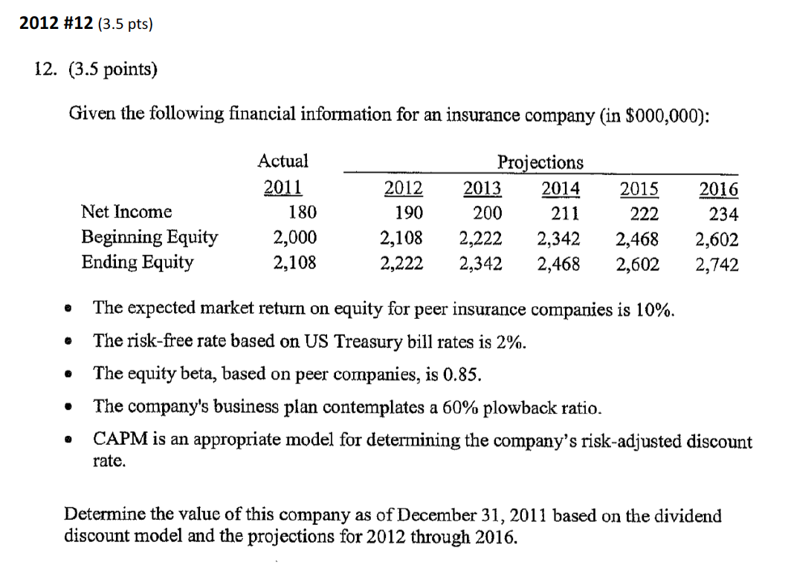
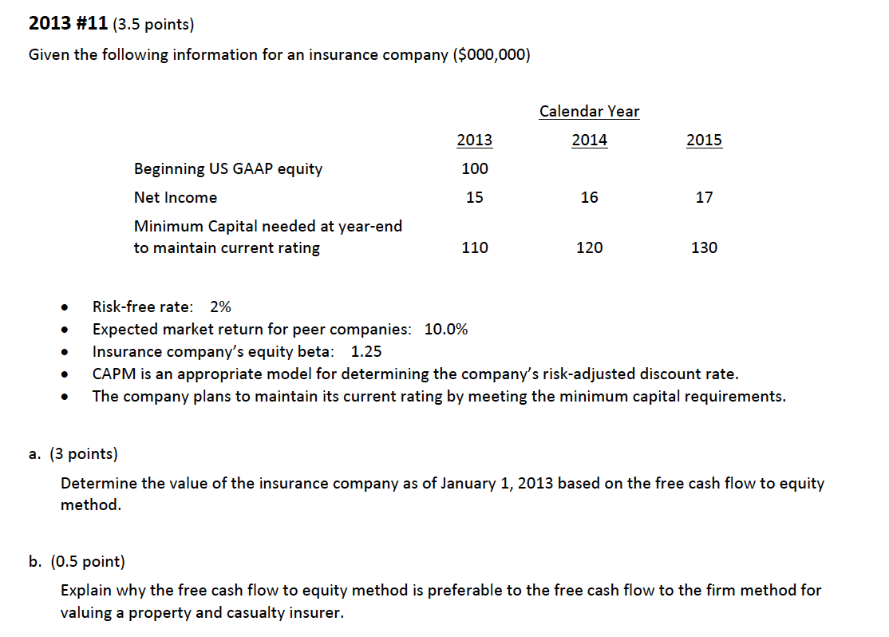

15.7 Past Exam Questions
Haven’t done TIA practice questions
Concepts
- \(\star\) 2011 - #12 a: higher \(g\) should be matched with higher \(\beta\) for being more risky
- 2011 - #12 c: relationship between \(g\) and \(k\)
- 2015 #17 b-c: \(\beta\) discussion
DDM
- 2008 #43: DDM calc and convert to P:E
- \(\star\) 2008 #44: DDM calc and interpretation
- 2008 #45: Comparison on P:E
- 2009 #34
- 2011 - #12 b: DDM calc (Get \(r_f\) as t-bond less liquidity premium)
- \(\star\) 2012 #12: Full calc with DDM
- 2014 #16: DDM calc
- 2015 #17 a: DDM calc
FCFE
- \(\star\) 2009 #35: Full FCFE calc
- \(\star\) 2013 #11: Full FCFE calc with discussion
- 2014 #17: FCFE Calc; Not sure bout the reserve increase impact on required capital
- \(\star\) 2015 #16: Discussion on DCF
AE
- \(\star\) 2010 #31: Full AE calc
- 2011 - #13: Price to Book value calc + discussion on assumption
- 2013 #12: Full AE Calc + discussion
- 2015 #15: AE Calc + discussion
Relative Valuation
- \(\star\) 2014 #15: Price to Book calc using all the ratios given by LoB
15.7.1 Question Highlights

Figure 15.1: 2008 Question 43

Figure 15.1: 2008 Question 43

Figure 15.2: 2009 Question 35

Figure 15.2: 2009 Question 35

Figure 15.2: 2009 Question 35

Figure 15.3: 2010 Question 31

Figure 15.3: 2010 Question 31

Figure 15.4: 2011 Question 13

Figure 15.4: 2011 Question 13

Figure 15.5: 2012 Question 12

Figure 15.5: 2012 Question 12

Figure 15.6: 2013 Question 11

Figure 15.6: 2013 Question 11